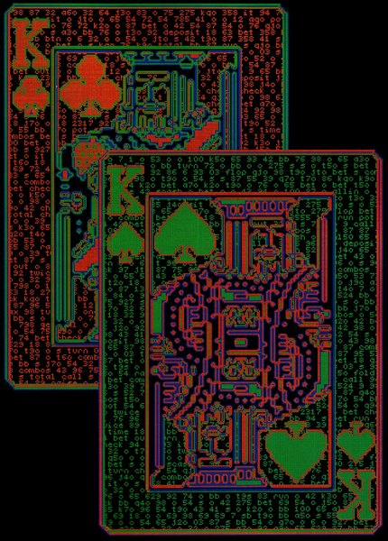
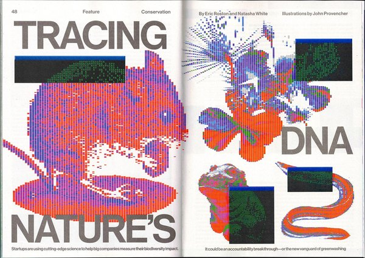

CRVI000461Richard Turley - Let's Get It On
Bloomberg Businessweek, 6–12 February 2012 · 2012
Bloomberg Businessweek, 6–12 February 2012 · 2012

CRVI000462Richard Turley - The Freewheelin' Ben Bernanke
Bloomberg Businessweek, 6 August 2012 · illustration by David Parkins · 2012
Bloomberg Businessweek, 6 August 2012 · illustration by David Parkins · 2012

CRVI000463Richard Turley - The Underground Solution
Bloomberg Businessweek, 7 November 2011 · 2011
Bloomberg Businessweek, 7 November 2011 · 2011

CRVI000464Richard Turley - The Hedge Fund Myth
Bloomberg Businessweek, 15 July 2013 · 2013
Bloomberg Businessweek, 15 July 2013 · 2013

CRVI000465Unknown - Easy Target
Bloomberg Businessweek, 17 March 2014 · 2014
Bloomberg Businessweek, 17 March 2014 · 2014

CRVI000466Unknown - XXX
Bloomberg Businessweek, June 25 – July 1, 2012 · 2012
Bloomberg Businessweek, June 25 – July 1, 2012 · 2012

CRVI000467Unknown - Transition Game
Bloomberg Businessweek
Bloomberg Businessweek

CRVI000468Unknown - The Year Ahead: 2015
Bloomberg Businessweek, November 10, 2014 – January 6, 2015 · 2014
Bloomberg Businessweek, November 10, 2014 – January 6, 2015 · 2014

CRVI000469Unknown - The U.S. Created PRISM. It Also Created the Antidote
Bloomberg Businessweek
Bloomberg Businessweek

CRVI000470Unknown - Miracle Worker
Bloomberg Businessweek
Bloomberg Businessweek

CRVI000471Unknown - Samsung's Secret
Bloomberg Businessweek
Bloomberg Businessweek

CRVI000472Unknown - Selling Obama
Bloomberg Businessweek
Bloomberg Businessweek

CRVI000473Unknown - Pikettymania
Bloomberg Businessweek, June 2 – June 8, 2014 · 2014
Bloomberg Businessweek, June 2 – June 8, 2014 · 2014

CRVI000474Unknown - The How-To Issue
Bloomberg Businessweek, April 15 – April 21, 2013 · 2013
Bloomberg Businessweek, April 15 – April 21, 2013 · 2013

CRVI000496Chris Nosenzo - Is Google Hurting Small Business?
Bloomberg Businessweek, August 10, 2020 · 2020
Bloomberg Businessweek, August 10, 2020 · 2020

CRVI000509Unknown - Anthony Fauci
Bloomberg Businessweek, 7 December 2020 · opening spread · 2020
Bloomberg Businessweek, 7 December 2020 · opening spread · 2020

CRVI000514Chris Nosenzo - Will It Ever End?
Bloomberg Businessweek, February 20, 2023 · 2023
Bloomberg Businessweek, February 20, 2023 · 2023

CRVI000535Chris Nosenzo - Lupin and the Art of the Steal
Bloomberg Businessweek, July 5, 2021 · 2021
Bloomberg Businessweek, July 5, 2021 · 2021

CRVI000538Chris Nosenzo - How to Lose $20 Billion* in 2 Days
Bloomberg Businessweek, April 12, 2021 · 2021
Bloomberg Businessweek, April 12, 2021 · 2021

CRVI000557Somnath Bhatt - The Baristas' Rebellion
Bloomberg Businessweek, May 16, 2022 · 2022
Bloomberg Businessweek, May 16, 2022 · 2022

CRVI000617Nejc Prah, Simon Dawson/Bloomberg - Big Changes at the Top
Bloomberg Businessweek, March 19 2018 · 2018
Bloomberg Businessweek, March 19 2018 · 2018

CRVI000627Unknown - It's Not Easy Being Mark Zuckerberg Right Now
Bloomberg Businessweek, September 25, 2017 · 2017
Bloomberg Businessweek, September 25, 2017 · 2017

CRVI000636Vasilis Papadrosos, Peter Jablokow - United's Quest to Be Less Awful
Bloomberg Businessweek, January 18-24 READER'S CHOICE Chicagoly "Addicted to the Internet," Fall 2016 · 2016
Bloomberg Businessweek, January 18-24 READER'S CHOICE Chicagoly "Addicted to the Internet," Fall 2016 · 2016

CRVI000637Unknown - Yahoo's $8 Billion Black Hole
Bloomberg Businessweek, May 2-8 2016 · 2016
Bloomberg Businessweek, May 2-8 2016 · 2016

CRVI000645Robert Vargas - If You Can't Read That, You'd Better Read This
Bloomberg Businessweek, June 15–28 2015 · 2015
Bloomberg Businessweek, June 15–28 2015 · 2015

CRVI000652Unknown - Coke Finally Admits It Has a Fat Problem--And a Plan to Fix It
Bloomberg Businessweek, August 4-10, 2014 · 2014
Bloomberg Businessweek, August 4-10, 2014 · 2014

CRVI000656Unknown - How Blackberry Became a Relic
Bloomberg Businessweek, December 9–1 Photographs from various museums and art libraries 2013 · 2013
Bloomberg Businessweek, December 9–1 Photographs from various museums and art libraries 2013 · 2013

CRVI000657David Parkins - The Surprising Sophistication of Twitter
Bloomberg Businessweek, November 11–17 2013 · 2013
Bloomberg Businessweek, November 11–17 2013 · 2013

CRVI000659Unknown - Bang Head Here
Bloomberg Businessweek, May 28–June 3, 2012 · 2012
Bloomberg Businessweek, May 28–June 3, 2012 · 2012

CRVI000669Unknown - Hong Kong's Countdown to 2047
Bloomberg Businessweek, August 19, 2019 · 2019
Bloomberg Businessweek, August 19, 2019 · 2019

CRVI000675Unknown - The Apology Machine
Bloomberg Businessweek, March 18, 2019 · 2019
Bloomberg Businessweek, March 18, 2019 · 2019

CRVI000855Richard Turley - Design
Bloomberg Businessweek · 2012
Bloomberg Businessweek · 2012

CRVI000874John Provencher - The Russian Bot Army That Conquered Online Poker
Bloomberg Businessweek, 20 September 2024 · 2024
Bloomberg Businessweek, 20 September 2024 · 2024

CRVI000875John Provencher - [Bloomberg, weather]
Bloomberg Businessweek
Bloomberg Businessweek

CRVI000876John Provencher - Tracing Nature’s DNA
Bloomberg Businessweek, October 2023 · pages 48–49 · 2023
Bloomberg Businessweek, October 2023 · pages 48–49 · 2023